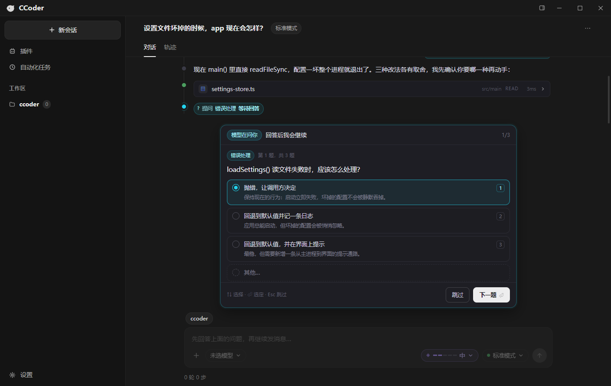
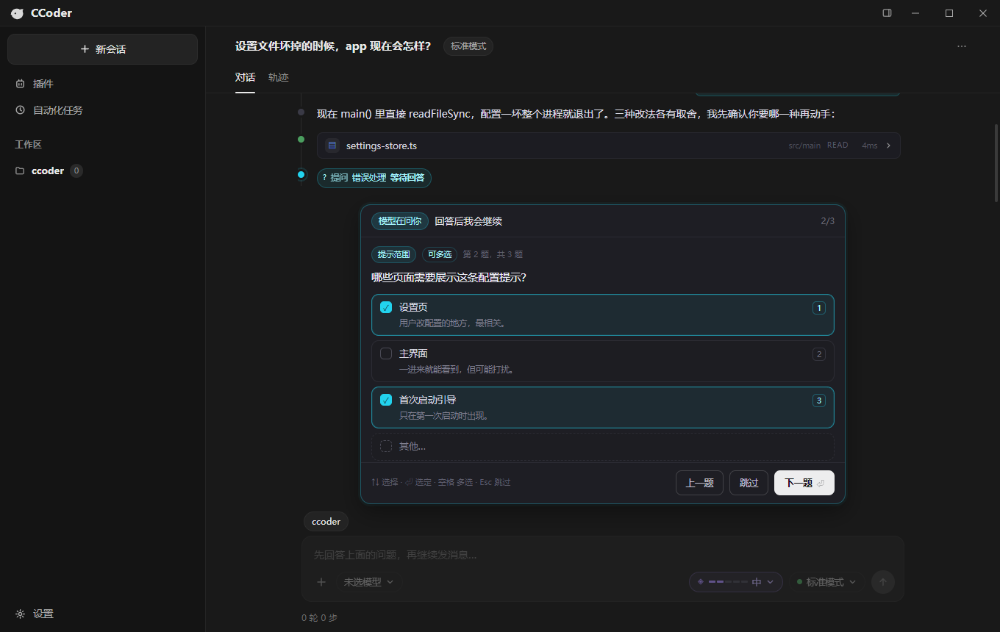
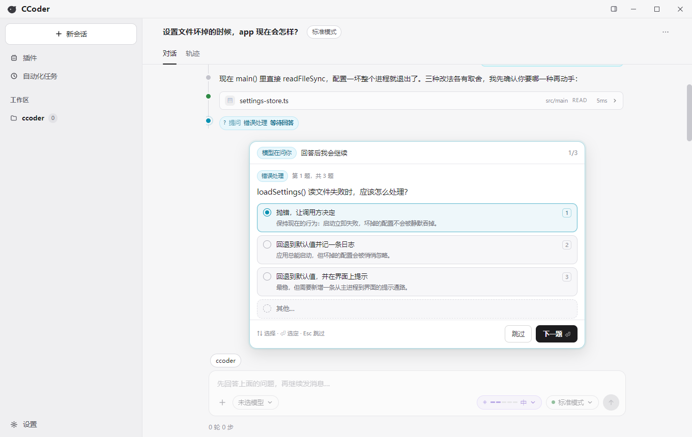
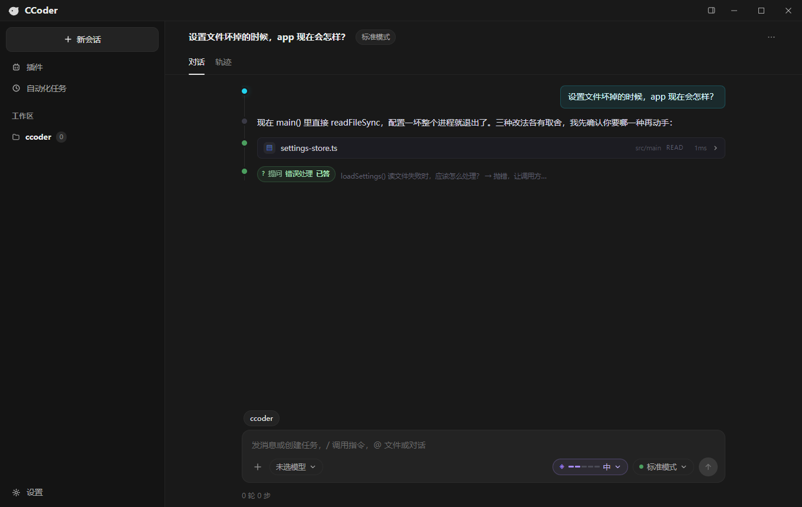

B 方案：输入框上方的底部抽屉。不遮转写区，青色区分于审批的黄色； 输入框在答题期间锁住，答完自动解锁。下面是真实组件在 Electron 里的截图。




回传协议：CLI 以 can_use_tool 发 AskUserQuestion，宿主回
allow + updatedInput.answers（多选是数组）；跳过回
deny。启动参数需要 --permission-prompt-tool stdio，
否则 CLI 2.1.x 不会把 AskUserQuestion 放进工具表。
历史回放：jsonl 的 toolUseResult 带 questions + answers，
重开旧会话时会合成一条「已答」留痕，不会丢失问答。